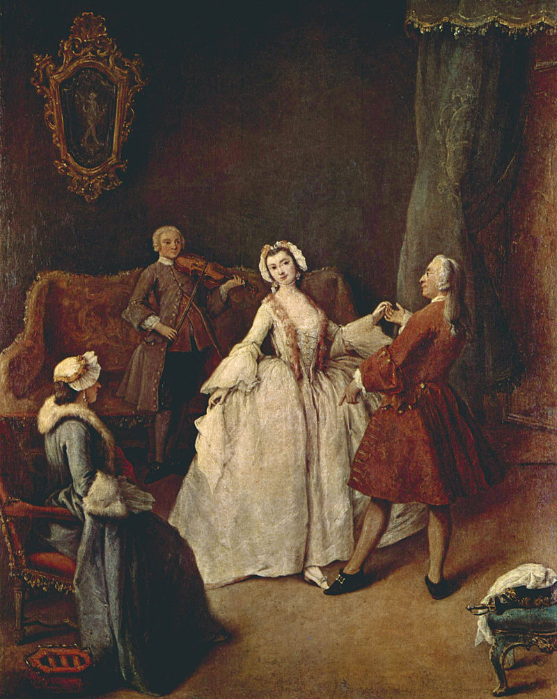
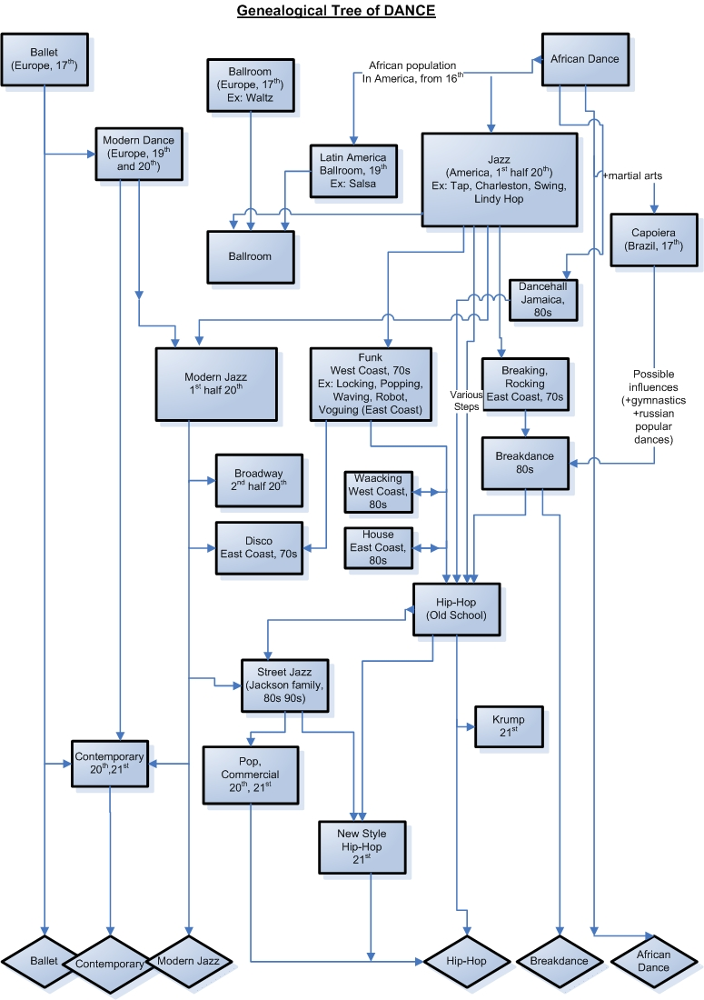

See also: Medieval dance, Renaissance dance, and History of ballet

The origins of ballet dancing can be traced to the Italian Renaissance courts of the 15th century. Dance masters would teach the steps to nobility and the court would participate in performances as a form of social entertainment. This practice continued for several centuries. In the 17th century, courtly ballet reached its peak under the rule of King Louis XIV.
By the 18th century, ballet had migrated from the French and Italian royal courts to the Paris Opéra under the careful direction of composer/dancer Jean-Baptiste Lully. Lully sought to develop ballet into a more serious art. Under his influence, ballet was turned into a recognized art that was performed by professional dancers rather than courtiers.
During the 18th century, ballet transitioned from a courtly dance of moving images as spectacle to a performance art in its own right. Ballet performances developed around a central narrative and contained expressive movement that revealed the relationships between characters. This dramatic style of ballet became known as the ballet d' action. The ballet d' action strove to express, for the first time, human emotions drawn directly from the dancers themselves. Masks previously worn by performers were removed so that emotional content could be derived from facial expressions.
Costumes during this time were very restricting for dancers. Although a more expressive use of the body was encouraged, dancers' movements were still restricted due to heavy materials and corseted dresses. Costumes often covered a dancer's physique and made it difficult to see complex or intricate choreography. It was not until choreographer Jean Georges Noverre called for dance reforms in 1760 with his Letters on Dancing and Ballets that costumes became more conducive. Noverre urged that costumes be crafted using lightweight fabrics that move fluidly with the body, complimenting a dancer's figure. In addition, dancers wore soft slippers that fit snuggly along the foot. This shoe design instilled confidence within the ballerina, daring her to dance on her toes. Naturalistic costuming allowed dancers to push the boundaries of movement, eventually rising en pointe.
The era of Romanticism produced ballets inspired by fantasy, mystique, and the unfamiliar cultures of exotic places. Ballets that focused more on the emotions, the fantasy and the spiritual worlds, heralded the beginning of true pointe-work. Now, on her toes, the deified ballerina (embodied in this period by the legendary ballerina Marie Taglioni) seemed to magically skim the surface of the stage, an ethereal being never quite touching the ground. It was during this period that the ascending star of the ballerina quite eclipsed the presence of the poor male dancer, who was in many cases reduced to the status of a moving statue, present only in order to lift the ballerina. This sad state was really only redressed by the rise of the male ballet star Vaslav Nijinsky, with the Ballets Russes, in the early 20th century. Ballet as we know it had well and truly evolved by this time, with all the familiar conventions of costume, choreographic form, plot, pomp, and circumstance firmly fixed in place.
Early 20th century: from ballet to contemporary dance
Since the Ballets Russes began revolutionizing ballet in the early 20th century, there have been continued attempts to break the mold of classical ballet. Currently the artistic scope of ballet technique (and its accompanying music, jumper, and multimedia) is more all-encompassing than ever. The boundaries that classify a work of classical ballet are constantly being stretched, muddied and blurred until perhaps all that remains today are traces of technique idioms such as turnout.
It was during the explosion of new thinking and exploration in the early 20th century that dance artists began to appreciate the qualities of the individual, the necessities of ritual and religion, the primitive, the expressive and the emotional. In this atmosphere modern dance began an explosion of growth. There was suddenly a new freedom in what was considered acceptable, what was considered art, and what people wanted to create. All kinds of other things were suddenly valued as much as, or beyond, the costumes and tricks of the ballet.
Most of the early 20th century modern choreographers and dancers saw ballet in the most negative light. Isadora Duncan thought it most ugly, nothing more than meaningless gymnastics. Martha Graham saw it as European and Imperialistic, having nothing to do with the modern American people. Merce Cunningham, while using some of the foundations of the ballet technique in his teaching, approached choreography and performance from a totally radical standpoint compared to the traditional balletic format.
The 20th century was indeed a period of breaking away from everything that ballet stood for. It was a time of unprecedented creative growth, for dancers and choreographers. It was also a time of shock, surprise and broadening of minds for the public, in terms of their definitions of what dance was. It was a revolution in the truest sense.
The late 20th and early 21st centuries

After the explosion of modern dance in the early 20th century, the 1960s saw the growth of postmodernism. Postmodernism veered towards simplicity, the beauty of small things, the beauty of untrained body, and unsophisticated movement. The famous "No" manifesto rejecting all costumes, stories and outer trappings in favour of raw and unpolished movement was perhaps the extreme of this wave of thinking. Unfortunately lack of costumes, stories and outer trappings do not make a good dance show, and it was not long before sets, décor and shock value re-entered the vocabulary of modern choreographers.
By the 1980s dance had come full circle and modern dance (or, by this time, "contemporary dance") was clearly still a highly technical and political vehicle for many practitioners. Existing alongside classical ballet, the two art-forms were by now living peacefully next door to one another with little of the rivalry and antipathy of previous eras. In a cleverly designed comment on this ongoing rivalry the brilliant collaboration of Twyla Tharp (one of the 20th Century's cutting edge Dance avant-gardist/contemporary) and Ballet dance was ultimately achieved. The present time sees us still in the very competitive artistic atmosphere where choreographers compete to produce the most shocking work, however, there are still glimpses of beauty to be had, and much incredible dancing in an age where dance technique has progressed further in expertise, strength and flexibility than ever before in history.
At the same time, mass culture experienced expansion of street dance. In 1973, famous group Jackson 5 performed on television a dance called Robot (choreographed by postmodern[14] artist Michael Jackson) a dance form cultivated in Richmond, CA. This event and later Soul Train performances by black dancers (such as Don Cambell) ignited a street culture revolution, in a sense. Bboying in New York, Locking in L.A., Poping in Fresno, CA, Boogaloo in Oakland, CA, Robot in Richmond, CA, all had their own creative explosions happen around the late 60's - 70's. Each with their own histories, practices, innovators and foundations.
For the emergence of 20th century modern dance see also: Mary Wigman, Gret Palucca, Harald Kreutzberg, Yvonne Georgi, and Isadora Duncan.
Hip-hop dance started when Clive Campbell, aka Kool DJ Herc and the father of hip-hop, came to New York from Jamaica in 1967. Toting the seeds of reggae from his homeland, he is credited with being the first DJ to use two turntables and identical copies of the same record to create his jams. But it was his extension of the breaks in these songs—the musical section where the percussive beats were most aggressive—that allowed him to create and name a culture of break boys and break girls who laid it down when the breaks came up. Briefly termed b-boys and b-girls, these dancers founded breakdancing, which is now a cornerstone of hip-hop dance.